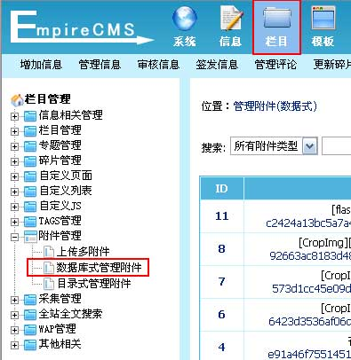

| 二、附件管理 |
| (一)、数据库式管理附件 |
| 1、登录后台，单击“栏目”菜单，选择“数据库式管理附件”子菜单，进入数据库式管理附件界面： |
|  |
| 2、进入数据库式管理附件界面，如下图： |
 |
| ID |
附件ID序号，增加附件时由系统按顺序依次生成。如果ID是粗体（如ID6）表示有信息引用，点击ID即可查看信息页面 |
| 文件名 |
附件文件名称。 |
| 增加者 |
附件的增加者。 |
| 文件大小 |
附件大小（KB）。 |
| 增加时间 |
附件增加的时间。 |
| 操作 |
[删除]：勾选多选框，单击删除按钮，删除已增加的附件。注意：删除的附件不可恢复，此操作需谨慎。 |
| [搜索]按钮 |
通过设置关键字、选择附件类型及栏目搜索附件进行管理。 |
| [批量删除]按钮 |
选择将删除的附件所在行，勾选多选框，单击批量删除按钮，批量删除已增加的附件。 |
| [目录式管理附件]按钮 |
数据式->目录式管理附件转换按钮。 |
| [上传多附件]按钮 |
进入上传多附件按钮。 |
| [清理失效附件] |
清除未经提交的信息所产生的附件。如增加信息时，编辑区上传了附件，但该信息放弃提交后，该附件即成了失效附件。 |
|
| (二)、目录式管理附件 |
| 1、登录后台，单击“栏目”菜单，选择“目录式管理附件”子菜单，进入目录式管理附件界面： |
|
| 2、进入目录式管理附件界面，如下图： |
图1：由于本教程设置附件按栏目目录存放，故图中，从非栏目上传的附件均存放于P目录中，其余9个目录为栏目上传的附件目录。
图2：
|
| (三)、附件管理相关内容 |
附件存放目录设置：
单击菜单“系统”>“系统设置”>“系统参数设置”子菜单，进入网站基本信息配置界面，单击“文件设置”属性进行附件存放目录设置： |
还可对后台上传附件的大小、扩展名等进行设置。 |